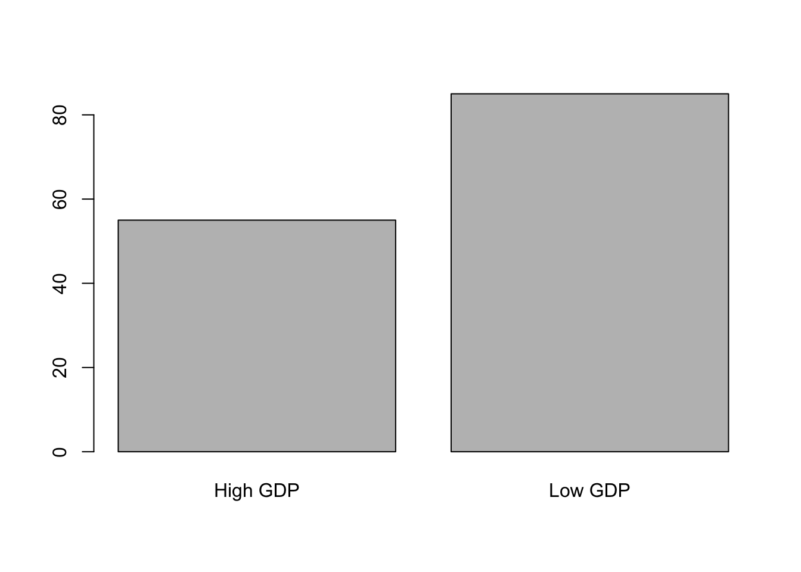
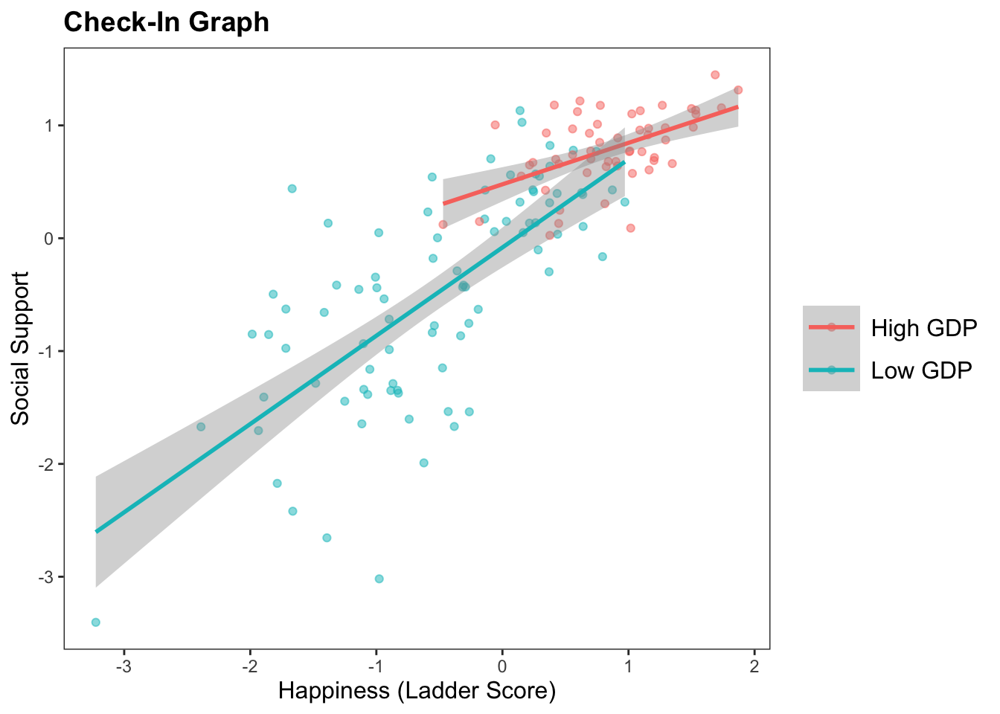
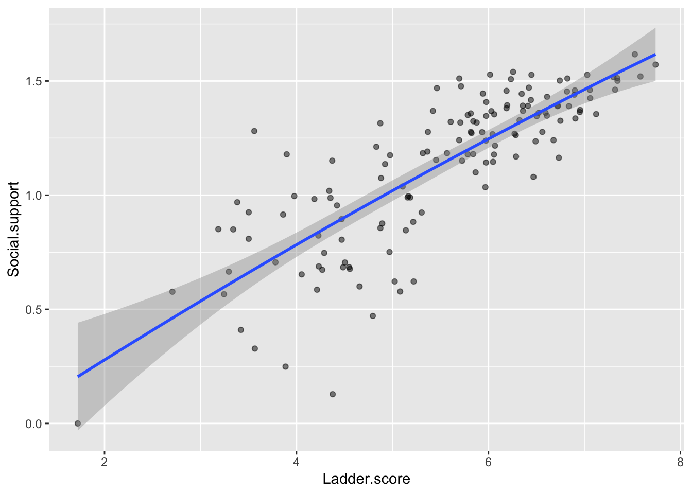
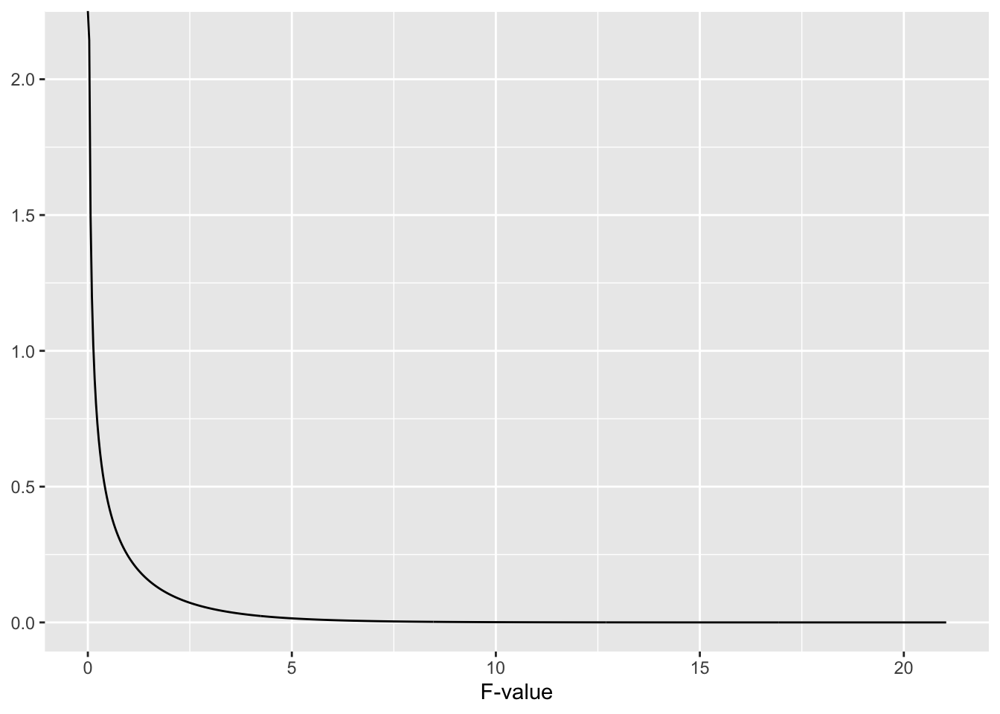
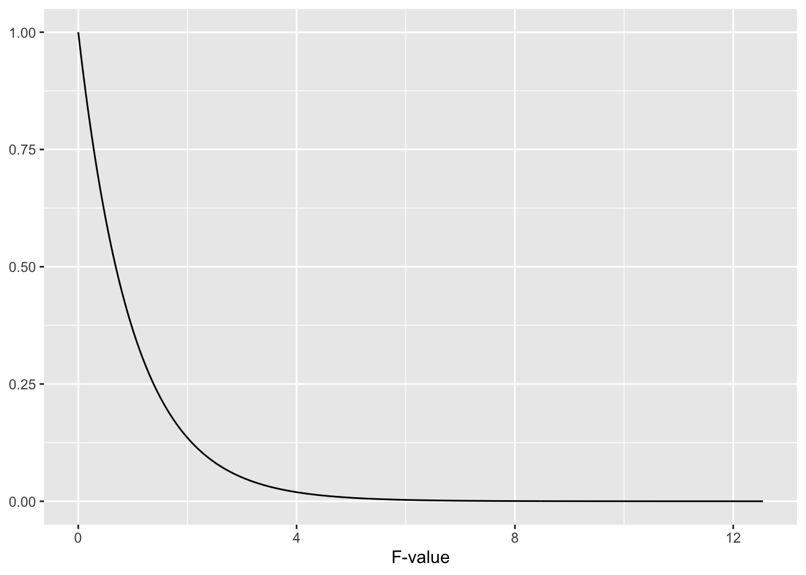
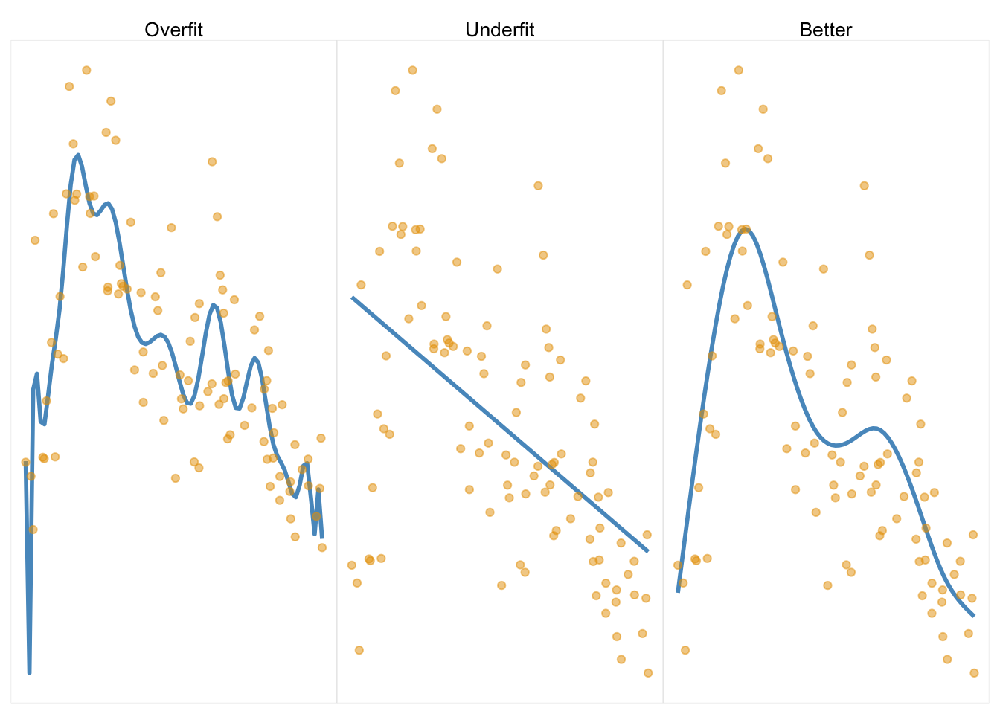
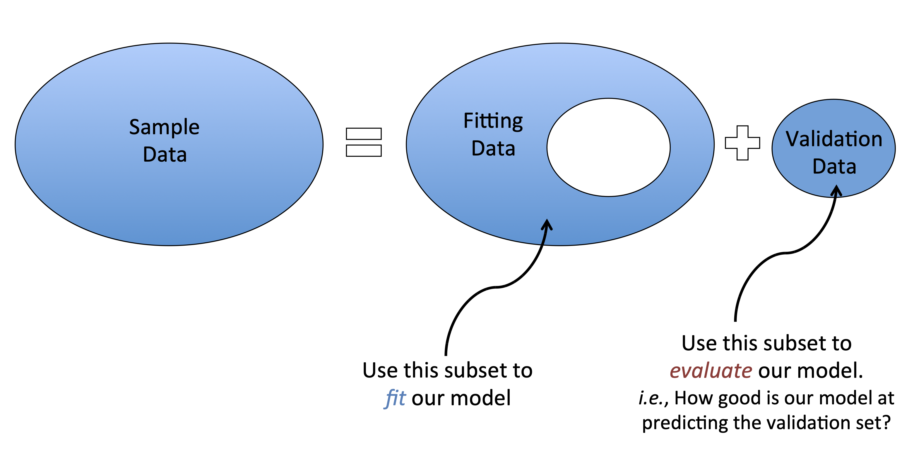

Lab 10 : Our final lab, and a review of what we have learned. Write a tutorial on how to define and interpret a regression in R. Make sure to explain each step to a future student in this class using one of the datasets posted to Dropbox (or your final project data, if you can share it.) Your tutorial should include.
A clearly stated research question and theory you can test with the dataset.
Graphing the variables needed to for your model, and doing any data cleaning or transformations needed.
Defining Linear Model(s), and interpreting the slope(s), intercept, and \(R^2\) for each model. Include a graph.
Explaining how a linear model changes when you standardize (z-score) the variables.
Defining, testing, and interpreting an interaction effect. Include a graph.
Estimating and interpreting sampling error of the linear model.
(Prof asks : is this too much???)
R Exam : Nah.
Instead, the 10% will be assigned to a group-based (or solo) assignment.
I give you all the same dataset and two research questions. Y’all decide how to interpret and analyze the data to answer the question and prepare a 1-2 page summary report.
Graded based on :
1) Clear description of data cleaning and outlier / removal decisions used.
2) Defining a linear model and reporting slopes and inferential statistics in a table.
3) Interpreting the results of the model; doing relevant model diagnostics.
4) Putting together results in an organized report.
library(jtools)d <-read.csv("~/Dropbox/!GRADSTATS/gradlab/Datasets/Dehumanization - Utych/dehumanization_mturk_utych.csv", stringsAsFactors = T)mod4x <-glm(dh_treat ~ age + gender + educ + race+ timing, data = d, family ="binomial")export_summs(mod4x, exp = T)
Model 1
(Intercept)
1.95
(0.61)
age
0.99
(0.01)
gender
1.30
(0.24)
educ
1.18
(0.56)
race
0.80 **
(0.07)
timing
1.00
(0.00)
N
354
AIC
490.51
BIC
513.72
Pseudo R2
0.05
*** p < 0.001; ** p < 0.01; * p < 0.05.
Use this Graph to answer Part 2 of the Check-In.
R Code for the graph
h <-read.csv("~/Dropbox/!GRADSTATS/gradlab/Datasets/World Happiness Report - 2024/World-happiness-report-2024.csv", stringsAsFactors = T)library(ggplot2)library(jtools)## Some data cleaning.h$GDPcat <-ifelse(scale(h$Log.GDP.per.capita) >sd(h$Log.GDP.per.capita, na.rm = T), "High GDP", "Low GDP")h$GDPcat <-as.factor(h$GDPcat)plot(h$GDPcat)

ggplot(data =subset(h, !is.na(h$GDPcat)), aes(x =scale(Ladder.score), y =scale(Social.support), color = GDPcat)) +geom_point(alpha = .5, position ="jitter") +geom_smooth(method ="lm") +labs(title ="Check-In Graph") +ylab("Social Support") +xlab("Happiness (Ladder Score)") +theme_apa()
`geom_smooth()` using formula = 'y ~ x'

Interaction Effect : social support = .08 + .25GDP + .60 Ladder - .10 * (GDP * Ladder) BLUE LINE : social support = .08 + .25-1 + .60 Ladder - .10 * (-1 * Ladder) = -.17 + .7 * Ladder RED LINE : = .08 + .251 + .60 Ladder - .10 * (1 * Ladder) = .32 + .5 * Ladder
R Code for the models
mod1 <-lm(scale(Social.support) ~scale(Log.GDP.per.capita), data = h)mod2 <-lm(scale(Social.support) ~scale(Ladder.score), data = h)mod3 <-lm(scale(Social.support) ~scale(Log.GDP.per.capita) +scale(Ladder.score), data = h)mod4 <-lm(scale(Social.support) ~scale(Ladder.score) *scale(Log.GDP.per.capita), data = h)export_summs(mod1, mod2, mod3, mod4)
Model 1
Model 2
Model 3
Model 4
(Intercept)
0.00
-0.00
-0.00
0.08
(0.06)
(0.05)
(0.05)
(0.06)
scale(Log.GDP.per.capita)
0.73 ***
0.25 **
0.25 **
(0.06)
(0.07)
(0.07)
scale(Ladder.score)
0.81 ***
0.62 ***
0.60 ***
(0.05)
(0.07)
(0.07)
scale(Ladder.score):scale(Log.GDP.per.capita)
-0.10 *
(0.05)
N
140
140
140
140
R2
0.53
0.66
0.69
0.70
*** p < 0.001; ** p < 0.01; * p < 0.05.
Other Issues to Consider with Multiple Regression
0. Transforming Models (Quadratic Terms)
ggplot(h, aes(x = Ladder.score, y = Social.support)) +geom_point(alpha = .5) +#geom_smooth(method = "lm") geom_smooth(method ="lm", formula = y ~ x +I(x^2))
Warning: Removed 3 rows containing non-finite outside the scale range
(`stat_smooth()`).
Warning: Removed 3 rows containing missing values or values outside the scale range
(`geom_point()`).

lm1 <-lm(Social.support ~ Ladder.score, data = h)summary(lm1)
Call:
lm(formula = Social.support ~ Ladder.score, data = h)
Residuals:
Min 1Q Median 3Q Max
-0.74144 -0.09781 0.00007 0.11996 0.59888
Coefficients:
Estimate Std. Error t value Pr(>|t|)
(Intercept) -0.13535 0.07899 -1.714 0.0889 .
Ladder.score 0.22956 0.01397 16.435 <2e-16 ***
---
Signif. codes: 0 '***' 0.001 '**' 0.01 '*' 0.05 '.' 0.1 ' ' 1
Residual standard error: 0.1945 on 138 degrees of freedom
(3 observations deleted due to missingness)
Multiple R-squared: 0.6619, Adjusted R-squared: 0.6594
F-statistic: 270.1 on 1 and 138 DF, p-value: < 2.2e-16
lm2 <-lm(Social.support ~ Ladder.score +I(Ladder.score^2), data = h)summary(lm2)
Call:
lm(formula = Social.support ~ Ladder.score + I(Ladder.score^2),
data = h)
Residuals:
Min 1Q Median 3Q Max
-0.74531 -0.09978 -0.00104 0.11676 0.60543
Coefficients:
Estimate Std. Error t value Pr(>|t|)
(Intercept) -0.266626 0.264845 -1.007 0.316
Ladder.score 0.282699 0.103251 2.738 0.007 **
I(Ladder.score^2) -0.005086 0.009791 -0.519 0.604
---
Signif. codes: 0 '***' 0.001 '**' 0.01 '*' 0.05 '.' 0.1 ' ' 1
Residual standard error: 0.195 on 137 degrees of freedom
(3 observations deleted due to missingness)
Multiple R-squared: 0.6625, Adjusted R-squared: 0.6576
F-statistic: 134.5 on 2 and 137 DF, p-value: < 2.2e-16
1. Which Model is “Best”???
We can evaluate whether a model is an improvement (compared to the mean) by evaluating the “fit”.
Not enough to see an increase in \(R^2\), because WHY????????
anova(lm1) # evaluating the model vs. the mean
Analysis of Variance Table
Response: Social.support
Df Sum Sq Mean Sq F value Pr(>F)
Ladder.score 1 10.221 10.2209 270.1 < 2.2e-16 ***
Residuals 138 5.222 0.0378
---
Signif. codes: 0 '***' 0.001 '**' 0.01 '*' 0.05 '.' 0.1 ' ' 1
When the models are “nested”, we can compare one model to another.
anova(lm1, lm2) # evaluating model 2 vs. model 1
Analysis of Variance Table
Model 1: Social.support ~ Ladder.score
Model 2: Social.support ~ Ladder.score + I(Ladder.score^2)
Res.Df RSS Df Sum of Sq F Pr(>F)
1 138 5.2220
2 137 5.2118 1 0.010265 0.2698 0.6043
The F-Distribution, Visualized
#install.packages("sjPlot")library(sjPlot)dist_f(deg.f1 =1, deg.f2 =138) # the f-distribution for model 1

dist_f(deg.f1 =2, deg.f2 =136) # the f-distribution for comparing model 1 and model 4

When comparing the fit of one model to a completely different model, will need another method.
Bootstrapping. You could resample the data, define two separate models, and evaluate the model fit in each resampled dataset, compare these models, then repeat the process many times. Yeah!
There are many other estimates of model performance, such as cross validation (see below) or fancier ML methods I don’t know :)
CLASS ENDED HERE! OTHER STUFF WILL APPEAR IN A FUTURE LECTURE. THANKS!
2. Watch Out For Overfitting.
When your model is too complex, each variable in the model (parameter) increases the model complexity.
complex models that perfectly fit the data are problematic: you essentially describing your sample, and not the underlying population (which is usually the goal of multiple regression.)
We don’t expect over-fit models to generalize to other samples. [Image source]

Cross Validation. To ensure your model generalizes to other samples, you can a) replicate, or b) cross-validate your data. Cross validation involves dividing your sample into sub-samples; define a model on one sample, then test the model in the other(s).

Here’s the most simple example of cross-validation (“train-test split”; “holdout cross validation”)
sample(0:1, nrow(h), replace = T, prob =c(.7, .3)) # using the sample function
## Applying the model to our testing dataset.predict(train.mod, newdata = htest) # produces predicted values from our training model, using the testing data.
Linear Regression
143 samples
2 predictor
No pre-processing
Resampling: Leave-One-Out Cross-Validation
Summary of sample sizes: 139, 139, 139, 139, 139, 139, ...
Resampling results:
RMSE Rsquared MAE
0.1902603 0.6720989 0.1361974
Tuning parameter 'intercept' was held constant at a value of TRUE
3. Watch Out For Multicollinearity.
If your independent variables are highly related, then your multivariate regression slope estimates are not uniquely determined. weird things happen to your coefficients, and this makes it hard to interpret your effects.
IN R : check the “variance inflation factor” (VIF); a measure of how much one IV is related to all the other IVs in the model. “Tradition” is that if VIF is > 5 (or I’ve also seen VIF > 10) there’s a problem in the regression.
\(\huge VIF_j=\frac{1}{1-R_{j}^{2}}\)
library(car)
Loading required package: carData
vif(mod4) # doesn't seem like multicollinearity is a problem.
there are higher-order terms (interactions) in this model
consider setting type = 'predictor'; see ?vif